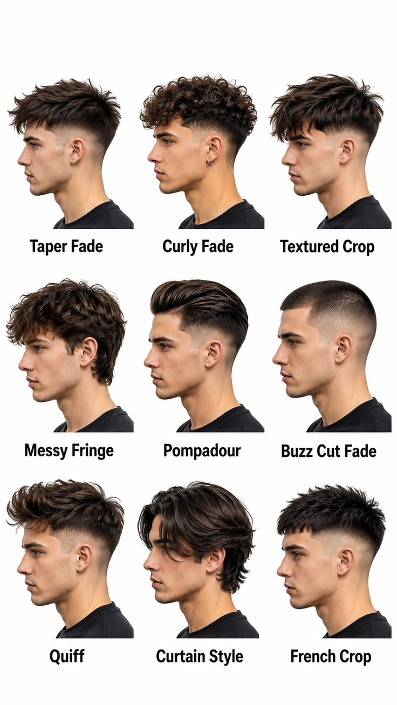

TENDÊNCIAS
Tendências de Barba para 2026: o que vem por aí
Por Marcelo Raiz • 05/08/2026 às 14h30
2026 marca um momento de equilíbrio entre tradição e ousadia no universo da barba. Depois de anos de estilos extremos — do rosto liso à barba longa estilo lenhador — o que se vê agora nas cadeiras da Raiz é uma busca por autenticidade com manutenção possível: barbas estruturadas de comprimento médio, cavanhaques bem definidos e o retorno de clássicos como o soul patch.
Um destaque também vai para a barba grisalha assumida, que deixou de ser escondida para virar sinônimo de maturidade e estilo. E os cuidados diários seguem essenciais: hidratação com óleo, uso de balm modelador e visitas regulares ao barbeiro a cada duas ou três semanas continuam sendo a receita mais indicada por quem é do ramo.
Na Raiz, recomendamos sempre conversar com o barbeiro antes de decidir o estilo — o formato do rosto e a rotina de cada cliente pesam mais do que qualquer tendência do momento.
Fonte: belezanaweb.com.br

CORTES
Cortes Masculinos que Vão Dominar as Barbearias em 2026
Por Equipe Raiz Barbearia • 18/07/2026 às 10h00
O corte de cabelo masculino em 2026 caminha para a praticidade sem abrir mão do estilo. A textura natural do cabelo ganhou espaço: cortes que respeitam ondulados e cacheados, com laterais graduadas e topo com movimento, estão cada vez mais presentes nas cadeiras da barbearia.
Os degradês continuam em alta, mas com transições mais suaves e menos marcadas — um visual que cresce bem entre uma visita e outra. Também virou tendência levar referências visuais para a conversa com o barbeiro: quanto mais clara a comunicação sobre rotina e manutenção, melhor o resultado final.
Aqui na Raiz, gostamos de lembrar que tendência é ponto de partida, não regra fixa — o corte ideal é sempre aquele que combina com o formato do seu rosto e com o tempo que você tem disponível no dia a dia.
Fonte: barbeariaabanca.com.br
Curtiu as dicas?
Na cadeira a conversa rende ainda mais. Marque seu horário e traga suas dúvidas sobre corte e barba.
Chamar no WhatsApp